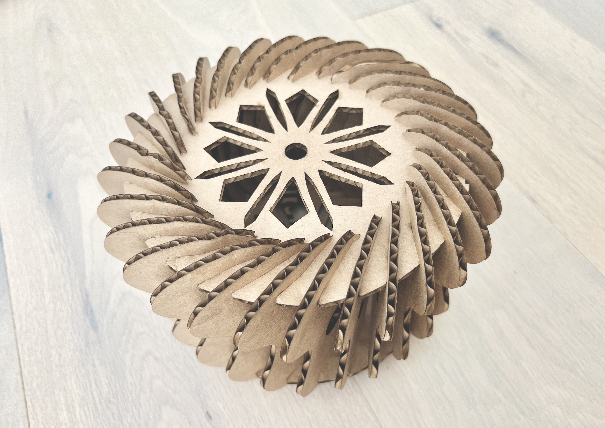
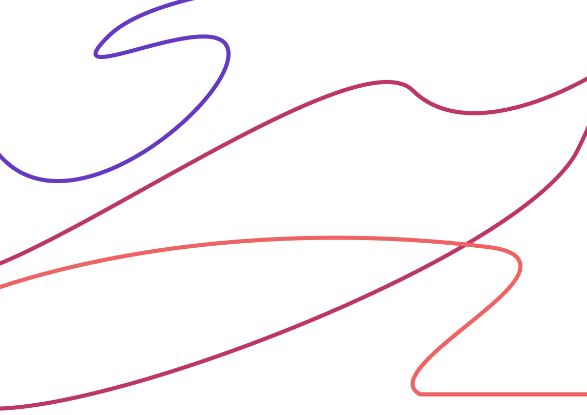

a1: modeling and laser cutting
Press kit made out of cardboard consisting of at least 30 instances of at least one unique part.

a2: parametric modelling with grasshopper
Using the model, design parts to be laser cut that can be clipped together.
At least one of the parts should enable you to connect a piece of cardboard
to another piece of cardboard.
Laser cut the parts and construct the physical model. The physical model should contain at least 30 parts.